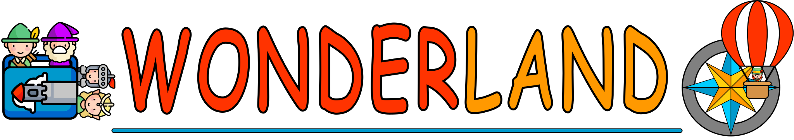

Portrait sur des personnages emblématiques provenant d'histoires
Wario
Né en 1992, Wario fut enlevé, très jeune, avec d’autres enfants, par la diabolique armée de tortues de
Kamek. L’objectif de cet enlèvement était de trouver les légendaires enfants étoiles, dont la légende
les présentait comme étant les seuls qui pouvaient s’opposer à la tentative de domination du monde par
les Koopa. Mais l’armée s’est vite débarrassée de Wario. En effet, ils en ont eu marre de ses crises de
colère. Il est alors abandonné dans une grotte sous-marine. Il fut assez rapidement retrouvé par un
Yoshi qui passait par là. Ensemble, ils ont réussi à s’échapper de la zone, et ont continué leur
aventure ensemble. Par la suite, ils croisèrent une bande de bandits, possédant tous une pièce de
monnaie. Wario, très gourmand, les attaqua alors dans l'espoir de récupérer une pièce, sans succès. Par
la suite, il réussit avec l’aide des autres Yoshis, à vaincre Bowser, avant de tenter de s’emparer de
son trésor.
Après cela, il est rentré chez lui. Il fit alors la connaissance de Mario, avec qui il grandit. Mais il
devint jaloux de Mario, plus populaire que lui, jusqu’à se placer en rival. Cherchant un moyen de
supplanter son rival, il réussit, un jour où Mario était parti sauver Daisy des griffes de Tatanga, à
prendre le contrôle du château de Mario. Il fut par la suite défait par celui-ci, qui au travers d’un
périple pour ouvrir les portes de la nouvelle demeure de Wario, parvint à l’éjecter de celle-ci.
Détrôné, il erra pendant un temps, en recherche de vengeance.
Et un beau jour, il eut une idée. La princesse Peach s’est fait dérober une statue en or à son effigie
par un équipage de pirate, dirigé par le capitaine Syrup. Au terme de son aventure, il parvient à battre
les pirates et à récupérer la statue. Malheureusement, celle-ci se fera dérober par Mario, qui
s’attribuera tous les mérites de la victoire de Wario.
Par la suite, il vivra de nombreuses autres aventures. Ainsi, il se retrouvera en Amazonie afin d’aller
à la recherche d’un trésor, il sera à la recherche d’une pyramide, se battra pour récupérer son château
et plein d’autres histoires rocambolesques.
Très grand amateur de richesses, il les collectera au fur et à mesure de ses aventures.
Il dispose aussi de nombreuses techniques. Manger un ail lui permet de grandir. Il peut aussi acquérir
des pouvoirs en portant des casques ou en se faisant blesser par ses ennemis.
C’est aussi un développeur de jeux-vidéos hors pair, conducteur d’avions, de karts. Il participe aussi à
de nombreux tournois sportifs (tennis, foot, basket...) et sera même qualifié aux JO, dans la catégorie
poids lourds.
Encore en vie aujourd’hui, on peut le retrouver au détour d’une piste de karting ou lors d’un combat
d’anthologie.
Sitographie :
WikiFandom
You Tube (lien 1)
You Tube (lien 2)
Wikipédia
-- Yohann Hirrien